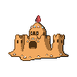

📖 英語版の図鑑説明
This Pokémon lives on beaches, but it hates water. Palossand can’t maintain its castle-like shape if it gets drenched by a heavy rain.
日本語訳
海岸に生息するが水が大嫌い。大雨に濡れると城の形を保てない。
📝 この図鑑文に出てくる英単語
| 英単語 | 意味 | 品詞 | レベル |
|---|---|---|---|
| beaches | 浜辺(複数形) | 名詞 | 中1 |
| hates | 嫌う | 動詞 | 中2 |
| maintain | 保つ | 動詞 | 高校 |
| castle | 城 | 名詞 | 中2 |
| shape | 形 | 名詞 | 中2 |
| drenched | ずぶぬれの | 形容詞 | 大学 |
文法ポイント gets drenched by は受け身(受動態)の形で「〜によって…される」という意味です。
if 〜 は「もし〜ならば」という条件を表す接続詞です。
💡 英語名「Palossand」の由来
英語名「Palossand」は、palace（宮殿）、loss（喪失）とsand（砂）を組み合わせた名前と考えられている。フランス語の名前は「Trépassable」で、trépas（死）、sable（砂）、très passable（まあまあ）から作られている。
出典 Bulbapedia
📊 シロデスナの種族値
HP85
こうげき75
ぼうぎょ110
とくこう100
とくぼう75
すばやさ35
合計 480
❓ よくある質問
- シロデスナの英語名は？
- シロデスナの英語名は「Palossand」です。
- シロデスナの英語名「Palossand」の由来は？
- 英語名「Palossand」は、palace（宮殿）、loss（喪失）とsand（砂）を組み合わせた名前と考えられている。フランス語の名前は「Trépassable」で、trépas（死）、sable（砂）、très passable（まあまあ）から作られている。
- シロデスナは英語版の図鑑でどう説明されている？
- 「This Pokémon lives on beaches, but it hates water. Palossand can’t maintain its castle-like shape if it gets drenched by a heavy rain.」と書かれています。日本語にすると「海岸に生息するが水が大嫌い。大雨に濡れると城の形を保てない。」という意味です。
シロデスナは第7世代（アローラ地方）のポケモンです。第7世代（アローラ地方）の英語名一覧 →